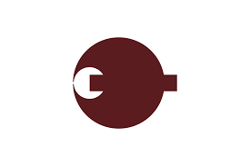
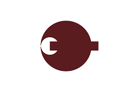

나라시는 일본 나라현의 현청 소재지이며, 인구는 약 35만 명이다.
오사카시에서 동쪽, 교토시에서 남쪽으로 각각 30km 쯤 떨어진 곳에 위치하고 있다.
주요 산업은 관광업이다. 나라 시대에 일본의 수도였고 그 이후에도 오랫동안 중요한 도시로 남아 불교 예술을 비롯해 많은 문화유산이 남아있다.
한국인 관광객도 간사이 여행 중 많이 찾고, 일본 내에서도 수학여행 인기 목적지 중 하나다.
관광업 외엔 시내에 이렇다 할 산업이 발달하지 못하여 오사카와 교토 양쪽의 베드타운으로서도 기능하고 있다.
관광도시임에도 불구하고 일본에서 내로라하는 대도시가 2개나 가까이 있기 때문에 숙박업이나 쇼핑 등 관광업종이 발달하지 못한 편이다.
더 관광수요가 큰 두 도시에서 당일치기하는 비율이 높기 때문이다.
심지어는 밥 한 끼 안 사먹고 나라공원 주변만 훌쩍 둘러보고 돌아가는 관광객도 많다.
명색이 일본의 역사 수도라는 명소가 숙박업 객실수로 전국 도도부현 중 최하위다.
동쪽 구릉지에는 나라 공원을 중심으로 도다이지, 고후쿠지, 가스가타이샤, 쇼소인 등이 있고, 서쪽 교외의 니시노쿄에는 사이다이지, 야쿠시지, 도쇼다이지, 헤이조 궁 등이 있다.
이 중 일부가 고대 나라의 역사 기념물이라는 유산군에 묶여 유네스코 세계유산에 등재되어 있다.
예로부터 전승되고 있는 고전 행사가 많고, 칠기·먹·붓 등의 전통 공예품의 생산도 활발하다.
대한민국의 경상북도 경주시와 자매도시 결연을 맺고 있는데, 실제로 매체에서 로컬라이징되는 것과 달리 경주시는 천여년 전에 수도였던 점이나
도시에 널린 고분, 오늘날 30만 정도 되는 인구 등, 교토보다는 나라에 더 가까운 모습이다.
도다이지 등 세계유산이 있는 나라 공원 및 주변 도로에 꽃사슴들이 바글바글하다 (2021년 기준으로 약 1,200마리).
한국에 흔한 고라니와 달리 덩치도 더 크고 수컷은 뿔도 크고 멋지게 자라는 종이라서 관광객들이 얘들과 기념사진을 많이 찍는다.
농장이 아니라 공원이라는 이름처럼 사슴공원 주위에는 방책 같은 게 전혀 없어서 사슴공원 주위에도 사슴들이 어슬렁거린다.
공원 내에 차로도 있어 인도의 소들 마냥 횡단보도를 건너는 일도 일상다반사이고, 사슴들이 신호를 무시하고 활보하는 일도 많아 간혹 로드킬이 일어나기도 한다.
가게와 노상에서 사슴에게 줄 사슴전용의 센베를 10장 당 150엔에 파는데, 시카센베 (鹿せんべい)라고 부른다.
인간이 먹는 것과는 성분이 달라서 먹어보면 맛이 없고 텁텁하다.
이 센베는 사슴보호 기금조성 목적으로 상인과 코옵해서 파는 것이며 관광객이 한참 많았을땐 한해 수천만개씩 팔았다고 한다.
이 센베를 들고 있으면 주변에 사슴들이 몰려든다.
슬슬 뿌리며 나눠주면서 사슴과 놀던 중 갑자기 들이대는 사슴들에게 놀라서 허둥지둥 뿌려본 경험있는 사람이 꽤 있을 것이다.
사실 노점에서 사자마자 사슴들이 달라붙는다. 옷과 여권을 질겅질겅 뜯어 먹기도 하며, 센베로 약 올리면 물거나 머리를 박기도 한다.
참고로 센베를 줄 때 물릴 수도 있으니 손바닥 위에 얹어서 주지 말자. 과자 끝을 잡고 주어야 안전하다.